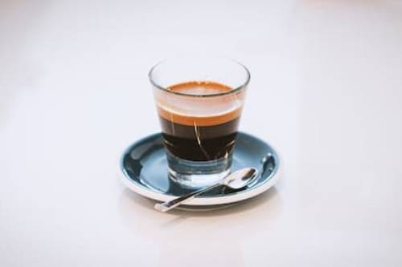

Card
Espresso is the name of a highly concentrated, bittersweet coffee originating in Italy in the early 20th century. Each shot of espresso is made to order upon customer request, as opposed to being brewed in anticipation of demand.
Learn moreEspresso is the name of a highly concentrated, bittersweet coffee originating in Italy in the early 20th century. Each shot of espresso is made to order upon customer request, as opposed to being brewed in anticipation of demand.
Learn moreEspresso is the name of a highly concentrated, bittersweet coffee originating in Italy in the early 20th century. Each shot of espresso is made to order upon customer request, as opposed to being brewed in anticipation of demand.
Learn moreEspresso is the name of a highly concentrated, bittersweet coffee originating in Italy in the early 20th century. Each shot of espresso is made to order upon customer request, as opposed to being brewed in anticipation of demand.
Learn more